LESSON 1: HOW PROTEIN IS MADE USING INFORMATION FROM DNA
Different types of proteins exist in every living organism. Protein is the
most varied molecule in which the human body contains at least 10,000
different kinds of proteins. Since the human body is made up of cells, their
unique characteristics are determined by the type of proteins they possess.
For example, the red blood cells are able to carry oxygen throughout the
body because they contain a protein that is not found in other cells.
Another example is that the muscle cells are made up of fibrous protein
which allows the movement of the muscle to contract and relax. Body covering
of the body such as the skin, nail, and hair contain a kind of protein that
makes them tough and horny.
The proteins that occur in the body are large, complex molecules composed
mainly oxygen, hydrogen, carbon, and nitrogen. Proteins are essential part
structure of cells. It acts as an enzyme or catalyst for chemical reactions
in cells.
Amino Acid
Amino acids are the building blocks of proteins, which are made up of long
chains of chemical units. There are 20 different amino acids. Our body
system can synthesize non-essential amino acids through metabolic process
from simple organic molecules and the nine essential amino acids must be
obtained from the dietary food we intake.
IMPORTANCE OF PROTEINS IN THE BODY
- Protein hormones regulate many physiological processes, like insulin,
that affects glucose transport into cells.
- Proteins in the blood help as blood clotting factor and transport
molecule. For instance, hemoglobin transports oxygen in the blood.
- Protein acts as ion channels, carrier, and receptor molecules in the
cell membrane.
THE THREE KINDS OF RNA IN PROTEIN SYNTHESIS
There are three kinds of RNA in which cells build proteins. This process is
called protein synthesis.
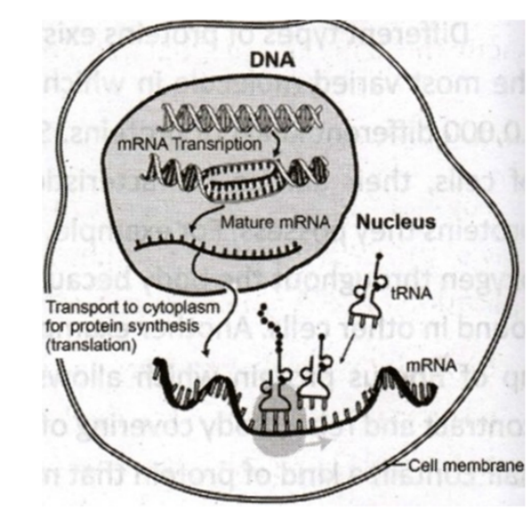
- Messenger RNA (mRNA) is a type of molecule of RNA that
travels from the nucleus to the ribosomes in the cytoplasm, where the
information in the copy is used for a protein product.
- Ribosomal RNA (rRNA) is the RNA component of the
ribosome and a cell's protein factory in all living cells. It provides a
mechanism for decoding mRNA into amino acid and interacts with tRNA.
- Transfer RNA (tRNA) is an adaptor molecule composed of
RNA, typically 73 to 93 nucleotides in length that brings amino acids
from the cytoplasm to a ribosome to help make the growing protein.
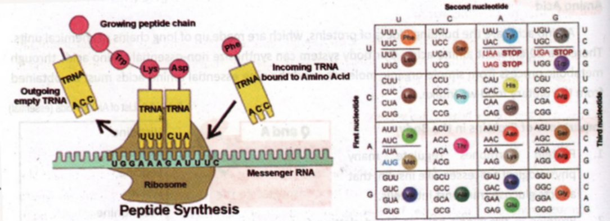
The genetic code is shared by all organisms. For instance, you want to
determine which amino acid is encoded by CAU codon. First, find the first
base C from the first nucleotides in the left part of the Genetic Code.
Then, find the second base A from the second nucleotides on the upper part.
Finally, find the third base U from the third nucleotides in the right side
of the Genetic Code. Hence, we find the amino acid histidine as encoded by
codon CAU.
DNA POLYMERASE
Enzymes and other proteins are responsible for the process of replication. An
enzyme begins the process by unzipping the double helix to separate the
strands of DNA. Some proteins hold the strands apart, which serve as the
template. The floating free nucleotides in the nucleus will be paired with
the nucleotide of the existing DNA strand. The DNA polymerase (group of
enzymes) is responsible in bonding the new nucleotide together. When the
process is done, it forms two complete molecules of DNA, each exactly the
same the original double strand.
THE REPLICATION PROCESS
Before the cell of an organism can reproduce, it must first replicate or make
a copy of their DNA. Copy of the DNA happens whether the cell is prokaryote
or a eukaryote. The following steps describe the replication of DNA in both
eukaryotic and prokaryotic cells:
- DNA replication takes place in the cytoplasm of prokaryotes and in the
nucleus of eukaryotes. The enzymes start to unzip the double helix as
the nucleotide base pairs separate. Each side of the double helix runs
in opposite directions. At same time, replication begins on both strands
of the molecules.
- Free nucleotides pair with the base exposed as the template strand
continuously unzip, an enzyme complex-DNA polymerase attaches the
nucleotide together to form a new strand similar to each template.
- A sub-unit of the DNA polymerase proofreads the new DNA and the DNA
ligase (enzyme) seals up the fragments into one long strand.
- Two similar double-stranded molecules of DNA result from replication.
The new copies automatically wind up again. According to Nowick, "DNA
replication is semi-conservative because one old strand is conserved,
and a new strand is made."
PROCESSES OF PRODUCING PROTEIN FROM DNA
1. Transcription
The DNA is found inside the nucleus of the cells which are embedded in the
chromosomes. The genetic information within the DNA must be transported to
the ribosome in the cytoplasm where protein synthesis takes place. The
genetic information or code is copied into the mRNA through the process of
transcription. The transcription process occurs when the nucleotide sequence
along the DNA is copied into a strand of mRNA. The DNA strand will be
exposed once the DNA molecule uncoils. The RNA polymerase is responsible for
the alignment and binding together of the ribonucleotides that will create
the single strand of RNA molecule. The mRNA molecule, as the complimentary
ribonucleotides, attach to the exposed bases of the DNA strand.
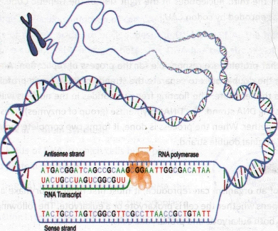
2. Translation
Translation is the final step in the synthesis of a small protein through the
help of the mRNA. The transfer of code from the mRNA to a small protein
begins when the mRNA molecule attaches to the ribosome, which forms the
mRNA-ribosome complex. The different amino acids found in the cytoplasm must
first be transferred in the mRNA-ribosome complex by another RNA. An amino
acid is then attached to a specific transfer RNA (tRNA). There are as plenty
of tRNA as to the presence of amino acids because it is intended that each
tRNA is coded to specific kind of amino acid. Translation is the converting
the information from the RNA into a protein. Each tRNA with its attached
specific amino acid moves to the mRNA-ribosome complex.
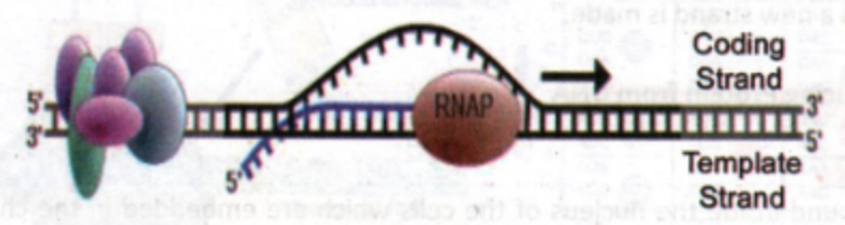
The ribosome changes its position by three nucleotides. The tRNA without the
amino acid is detached from the ribosome. The ribosome now shifts to the
next codon, ready to bind another tRNA with its specific amino acid. The
mRNA codon recognizes which tRNA is next, as a result, specifying which
amino acid will be next in the polypeptide (addition of amino acids to the
protein) chain. The process is repeated as the ribosome goes along the mRNA
chain. A codon in the mRNA stops when the ribosome encounters the addition
of amino acids to the protein.
LESSON 2: MUTATIONS THAT OCCUR IN SEX CELLS AS BEING
HERITABLE
Many types of mutation can occur in an organism's DNA. Biologically, mutation
is the change in genetic material. It can be a source of beneficial genetic
variation or it may have dangerous effects. Mutations can result from DNA
copying mistakes made during cell division, and exposure to ionizing
radiation like gamma rays from radioactive elements such as uranium and
plutonium. Another cause of DNA copying mistakes is direct exposure to
chemicals or through infection by bacteria and viruses. The different types
of agents, whether they are in the form of physical or chemical that can
cause the alteration of the structure or sequence of DNA, are called
mutagens.
MUTATIONS OCCURRING IN SEX CELLS
How are genetic traits or characteristics passed on from parents to their
child? What do you think can determine the combination of traits that are
passed on? Mutations that occur in sex cells can be passed from parent to
their children. Since the chromosomes carry information about the
characteristics inherited from parents, it is better to have a clear
understanding on the structure of a chromosome. Chromosome is made up of a
chemical substance called deoxyribonucleic acid or DNA. Most of the cells in
the body contain 23 pairs of chromosomes (46 sets of chromosomes). The sex
cells contain half this number. When a sperm and egg cell unite, the
fertilized egg ends up with 46 chromosomes, which are 23 chromosomes from
each parent. The chromosome contains many genes, a section of a chromosome
that determines a single trait. Genes are the basic unit of heredity. Once
the egg is fertilized, it may now contain two genes for each trait - one
from the father and one from the mother. This is how hereditary information
is passed from one generation to the next. Do you think defective genes can
be inherited?
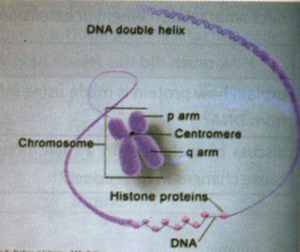
SOMATIC AND GERMINAL MUTATION
Eukaryotic organisms, such as mammals, humans, amphibians, avians, and
vascular plants, have two primary cell types: the germ and the somatic.
Mutations can occur in either of the two cell types. Mutation in somatic
cells is called somatic mutation. It occurs in non-reproductive cells and
will not be passed onto the offspring. They do not occur in cells that give
rise to sex cells (sperm and egg cell). Therefore, mutation will not be
passed along to the next offspring by sexual means.
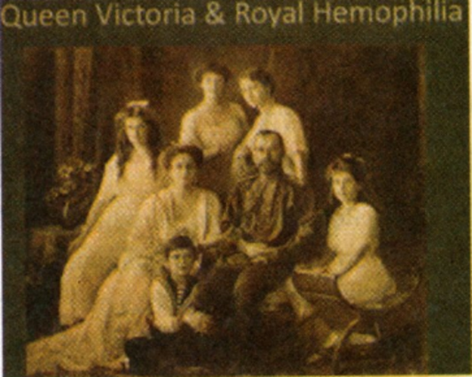
Germinal mutation is an alteration of the nucleotide sequence of the DNA that
makes up a gene. The germ cells give rise to sex cells that will carry the
mutations that will be passed on to the next generation, when a successful
mating happened. Generally, this type of mutation is not expressed in the
individual offspring containing the mutation, but it would be expressed in
either negative or positive affected sex cell production. For instance,
Queen Victoria of England introduced the hemophilia allele into a few number
of the royal families of Europe. The germ line mutation carried by the queen
was passed to their generation.
CHROMOSOME MUTATIONS
Chromosome mutations are departures from what is normal or desirable set of
chromosomes either for an individual or from a species. It refers also to
changes in the number sets of chromosome (-ploidy) and changes in the number
of individual chromosomes (-somy) and its appearance. There are several
kinds of chromosomal mutations which are enumerated below.
INSERTION
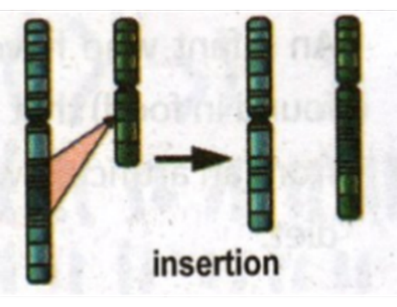
Insertion is a genetic material added from another chromosome.
TRANSLOCATION
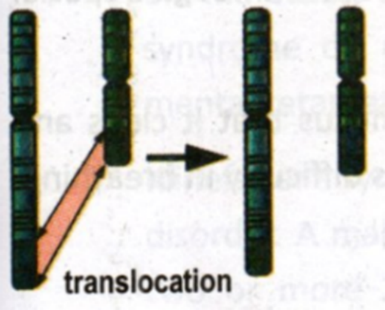
Translocation happens when part of a chromosome breaks off and combined to
another chromosome. This type of disorder is due to chromosomal level
mutation.
DELETION
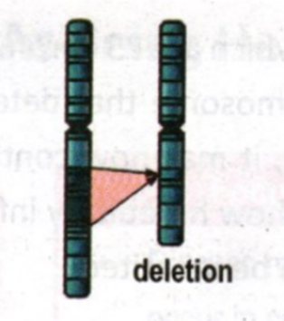
Deletion happens when there is loss of part of a chromosome.
DUPLICATION
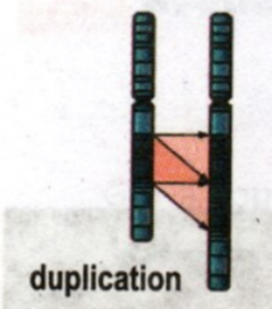
Duplication happens if there are extra copies of a part of a chromosome.
INVERSION
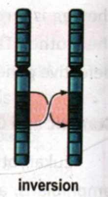
Inversion happened when the direction of a part of a chromosome is reversed.
GENETIC DISORDERS
1. Recessive Disorders
Recessive disorders happen when a child receives two defective genes from
each parent. A person who receives one defective recessive gene is called a
carrier. The carrier does not express the disorder because it is not
detectable by the dominant normal gene. Therefore, it can pass the defective
gene to their children.
- a. Sickle cell anemia is a genetic blood disorder. A person who inherits
two defective genes will have abnormally shaped red blood cells and may
die at an early stage.
- b. Tay-Sachs disease is characterized by the lack of an important
chemical in the brain. Infants who have this kind of disease usually die
within their first five years.
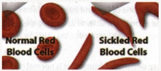
- c. Phenylketonuria or PKU is a rare genetic disorder that can cause
serious mental retardation in infants. An infant who has this kind of
disorder cannot break down phenylalanine (chemical commonly found in
food) that it builds up in the body, in which the brain is affected.
Phenylalanine is obtained from an artificial sweetener called aspartame.
This kind of disease can be treated through a special diet.
- d. Cystic fibrosis is a disease in which some glands produce too much
mucus that it clogs and damages the lungs. This disease is fatal among
children because it causes difficulty in breathing.
2. Sex-linked Disorders
Sex-linked disorders are more common in men because they have only one X
chromosome, so all defective genes on the chromosome will be expressed.
Since women carry two X chromosomes, a recessive defective gene on one X
chromosome can be covered by a normal gene on the other X-chromosome. A
woman who has this kind of disease may pass it on to her children. The most
common sex-linked disorder is color blindness and hemophilia.
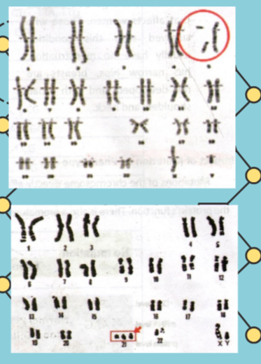
3. Human Genetic Syndrome
There are some genetic disorders that may have few or too much chromosomes. A
person who survived during chromosomal mutations is categorized by a
distinctive set of mental or physical abnormalities.
- a. Cri du chat is caused by the deletion of part of the short arm of
chromosomes 5. Babies who have this disease have wide-set eyes and a
small head and jaw.
- b. William syndrome is the result from the loss of a segment in
chromosome 7. They have large ears and facial features that make them
look like elves.
- c. Down syndrome (trisomy 21) is known as Mongolism. A child receives an
extra chromosome (chromosome 21) and has a distinctive physical
appearance. It is the most common cause of mental retardation. It can be
mild or severe mental retardation.

- d. Edward syndrome (trisomy 18) happens when there is an extra number 18
chromosome. It shows mental retardation and physical abnormalities to
the child and can live beyond one year.
- e. Patau's syndrome (trisomy 13) is caused by an extra copy of number 13
chromosome. Based on the study, about 90% of babies with this syndrome
do not survive in infancy. Severe mental retardation occurred in those
who survived.

- f. Klinefelter's syndrome (XXY) is another genetic disorder. A male who
has this syndrome has two or more X-chromosomes in addition to their Y
chromosomes. They lack facial hair and their testes, including the
prostate gland, are underdeveloped.
- g. Turner's syndrome has 45 chromosomes. About 96-98% with this
condition do not survive at birth. It is a genetic disorder that affects
women. Those who survived with this condition usually have no
menstruation, have narrow hips, breasts that are not developed, and
broad shoulders and neck.
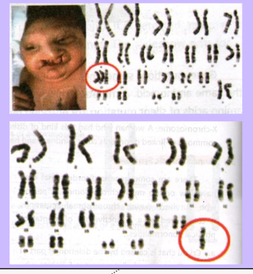
IMPACT OF MUTATION ON PHENOTYPE
Mutations of the chromosome directly affect the genes which can cause human
genetic disorders. The gene can no longer do its tasks normally once it
breaks up due to mutation. Gene mutation has a great impact on the organism.
For instance, substitution occurs in a coding region of DNA. If substitution
happens, the enzymes are not able to bind to its substrate, so the mutation
directly affects protein folding. Thus, it damages the protein's function.
There is also a premature stop codon.
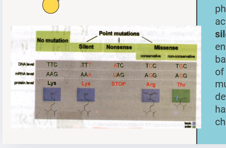
Gene mutations sometimes do not affect an organism's phenotype due to many
codons that code for the same amino acid. A mutation that has no effect on
the protein is called silent mutation. Most of the amino acids of silent
mutation are encoded by many different codons. For instance, if the third
base in the TCT codon for serine becomes different to any one of the other
bases, it can still be encoded. It is called silent mutation since there is
no change or the product cannot be detected without sequencing the gene.
Missense mutation happens when a point of mutation, in which a single
nucleotide change, results in different codes of amino acid.
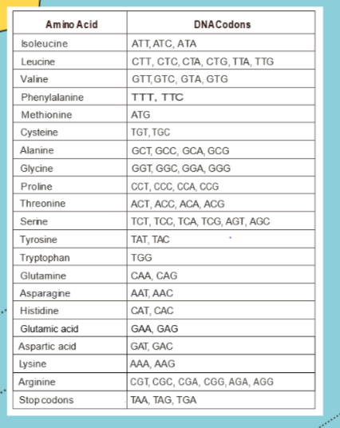
IMPACT OF MUTATION ON OFFSPRING
Mutation occurs in the body cells and in germ cells. Mutations in body cells
damage only the organisms in which they occur while in germ cells, mutation
may be passed to offspring. In some cases, mutation results in a more
beneficial phenotype due to being favored by natural selection and
increasing in a population.
CAUSES OF MUTATIONS:
- 1. SMOKING CAN RAISE RISK OF GENETIC MUTATION.
Smoking can cause germ cell mutagens that can destroy genes and cause
cancer and other diseases. If diseases occur, they will be inherited
and can be detrimental to the children later in their life. When a
mother smokes during her conception, it may lead to genetic
alterations in her child.
- 2. EFFECT OF OLD AGE ON OFFSPRING
Many experts found out that old age at conception had an effect on
offspring's intelligence and personality. Healthy and normal eggs
produced by females will decline as they get older. There is a
chromosomal error happening more frequently in the eggs, resulting
in abnormal embryos. Older mothers (aged 36 to 45) are at a higher
risk of having a baby with Down syndrome, Patau's syndrome, and
Edward's syndrome. For early detection of these diseases, parents
should prepare for the special needs of the baby.
- 3. CHEMOTHERAPY
Chemotherapy drugs can cause DNA mutations to the offspring. The
genome affected by chemotherapy drug will not stabilize, resulting
in new mutation.
- 4. EXTERNAL INFLUENCES
Too much exposure to hazardous chemicals and radiation such as x-rays
and gamma rays can cause mutations. The DNA will break down. Though
the cell repairs the DNA, it can no longer return to the original
structure, resulting in new mutations.
LIFE LESSONS
Man's Journey into Earth's Landforms
You had just learned that chromosomes contain many genes, a section of a
chromosome that determines a single trait and the genes are the basic unit
of heredity. All the traits you possess now are inherited from our parents.
We cannot choose what kind of traits we want for ourselves. We do not want
to inherit diseases from our parents. We should be thankful if we have good
traits and characteristics and a normal physical appearance. We have to
understand other people who inherited genetic disorders. We have to help
them in our own little way that we really care.